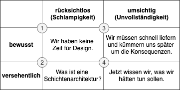
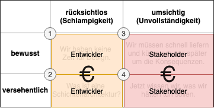

Technische Schulden und wie sie getilgt werden
Im Buch “Hybride Softwareentwicklung” gehe ich mit meinen Co-Autoren Philip Knott und Gregor Sandhaus in Kapitel 4 auf das Thema technische Schulden ein. Es zeigt sich anhand aktueller Fachartikel und auch in Gesprächen mit Kunden, dass das Thema in der Digitalisierungswelle einen neuen Stellenwert einnimmt. Zeit sich mit dem Thema etwas ausführlicher auseinander zu setzen.
Was sind eigentlich technische Schulden und warum sind sie negativ konnotiert? Schauen wir zunächst auf die Begrifflichkeit der Schulden.
Schulden - nur im deutschsprachigen Raum mit negativer Bedeutung
Wikipedia beschreibt Schulden als “Verbindlichkeiten, die mit Rückzahlungsverpflichtungen von natürlichen oder juristischen Personen gegenüber Gläubigern verbunden sind”. Weiterhin heisst es in dem Artikel, dass die negative Konnotation des Begriffs Schulden mit Schuld nur im deutschsprachigen Raum besteht. So wird im angelsächsischen Raum der Begriff debt für Schulden und guilt für die Schuld verwendet.
Der Begriff debt ist von dem lateinischen Verb debere abgeleitet und bedeutet soviel wie sollen aber auch schulden bzw. verdanken und ist damit deutlich positiver besetzt. Aus diesem Grund wird auch der Begriff technical debt im englischsprachigen Raum verwendet.
Der Begriff der finanziellen Schuld bedeutet, jemandem Geld zu schulden und damit in der Pflicht zu stehen, diese Schulden auch zurückzuzahlen. In der Finanzwelt existiert hierfür der Begriff Kredit, der wiederum von dem lateinischen Wort credere abstammt und soviel wie glauben, anvertrauen und verleihen bedeutet. In der 3. Person Singular ergibt sich das Wort credit, ergo “er verleiht” oder aber auch “er vertraut [mir] an”.
Finanzielle Schuld in Form eines Kredits und moralische Schuld hängen eng miteinander zusammen. Kommt der Schuldner seiner Verpflichtung zur Rückzahlung der Schulden nicht nach, entsteht neben dem rechtlichen Problem auch ein Vertrauensproblem.
Auf diesen Punkt werde ich später noch einmal zurückkommen. Zunächst schauen wir uns den Kontext der technischen Schulden an.
Technische Schulden sorgen für den Verfall von Software
Ward Cunningham hat die Metapher der technischen Schulden (technical debt) in der Informatik eingeführt, um die Konsequenzen schlechter technischer Umsetzung von Software mit wenigen Worten beschreiben zu können. Es ist gleichzeitig die Metapher für den zu erbringenden Mehraufwand, der für die Erweiterung einer bestehden Software notwendig ist.
Es gibt viele Ursachen für die Entstehung von technischen Schulden. Jeder der professionell Softwareentwicklung betreibt, kennt das Problem vernachlässigter bzw. verfallender Software. Dazu gehören unter anderem:
- Änderungen und Fehlerkorrekturen werden unüberlegt, unvollständig oder schlampig durchgeführt; entweder aus Unwissenheit, Zeitmangel oder der gestiegenen Komplexität der Software.
- Parameter werden hart einkodiert, statt sie flexibel und von außen steuerbar zu gestalten.
- Durch unkontrollierte Weiterentwicklung und Wartung verfällt die ursprünglich geplante Architektur bzw. passt nicht mehr zu den sich ändernden Einsatzszenarien.
- Copy & Paste statt Zusammenfassung und Modularisierung.
Die Liste ließe sich beliebig lang fortsetzen. Kurz gefasst=Der Verfall der Code- und Architektur-Qualität führt mittel- bis langfristig zu technischen Schulden. Nach Chris Sterling lassen sich diese Ursachen auf zwei Begriffe zusammenfassen= Unvollständigkeit und Schlampigkeit. Aber scheinbar nehmen Kunden, Anwender und Product-Owner die Verschlechterung der Codebasis billigend in Kauf wenn dadurch Release-Termine eingehalten werden.
Aber stimmt das wirklich? Nehmen die Interessierten (neudeutsch Stakeholder) einer Software tatsächlich die technischen Schulden billigend in Kauf? Sind sie in der Lage, die langfristigen Auswirkungen der getroffenen Entscheidungen zu bewerten?
Ein Großteil der heute für eine Anwendung verantwortlichen Personen besitzt nicht das technische Verständnis, um die Auswirkungen von technischen Schulden bewerten zu können. Tools wie Sonarqube helfen Entwicklern und Verantwortlichen technische Schulden zu identifizieren und diese in Form eines Schweregrads als auch einer Kennzahl - nämlich dem Aufwand zur Behebung - zu visualiseren.
Mit einem solchen Tool lässt sich bedingt die Codequalität bewerten, aber was sagt die statische Codeanalyse bspw. über die Qualität der Software-Architektur?
Von Vertrauen, Krediten und Tilgung bei technischen Schulden
Die Stakeholder einer Software vertrauen in die Entwickler, die ihnen die Anwendung erstellen. Sie bauen darauf, dass diese die richtigen Entscheidungen treffen. Neben dem finanziellen Vorschuss (sie finanzieren das Projekt) übertragen sie den Entwicklern auch einen Vertrauensvorschuss.
Dieser “Kredit” hat weitreichende Auswirkungen, denn aus der Praxis weiß jeder Softwareentwickler, dass sich technische Schulden nicht vermeiden lassen. Wir treffen und unterstützen fast täglich Entscheidungen von der Benennung einer Methode und seinen Eingangsparametern bis hin zu komplexen Architekturentscheidungen (Cloud-native, Monolith, Microservices).
Dabei werden wir Menschen durch den Bandwagon Effect beeinflusst. Der Mitläufer-Effekt oder auch Herdentrieb ist in der Mikroökonomie bekannt und besagt, dass die Steigerung eines Konsumguts aufgrund der Tatsache, dass andere Konsumenten dieses Gut gekauft haben, zurückzuführen ist. In der IT lässt sich dieses Phänomen ebenfalls beobachten=“Je häufiger ein Thema in Fachzeitschriften und [auf] Konferenzen besprochen wird, [desto] stärker scheint der Druck zu wachsen, es auch im eigenen Unternehmen einsetzen zu müssen.” (Wirdemann, Lueckow; OBJEKTspektrum 06/2019, S. 20)
Entwickler werden folglich extrinsisch beeinflusst und das hat Auswirkungen auf ihre Entscheidungen. Denn wer fragt sich nicht, ob er mit seiner Architektur noch am Puls der Zeit ist oder ob die ausgewählte Programmiersprache, die richtige Lösung für das Problem ist?
Alle Entscheidungen können - nicht müssen - zu technischen Schulden führen. Auf den ersten Blick sieht es so aus, als obliegt es allein den Entwicklern, der Verpflichtung zur “Rückzahlung” nachzukommen und die technischen Schulden kontinuierlich zu minimieren bzw. zu “tilgen”. Im weiteren Verlauf der Ausführungen zeige ich noch, dass diese nicht der Fall ist.
Eines der häufigsten Mittel zur Minimierung der technischen Schulden ist das kontinuierliche Refactoring. Hierfür bedarf es auf jeden Fall automatisierter Tests, sodass nach dem Aufräumen und Umbauen sichergestellt ist, dass die Anwendung bzw. der Code weiterhin korrekt funktioniert.
Hier stellt sich allerdings die Frage, wer für die Aufwände der Refaktorisierung und den damit einhergehenden Kosten aufkommt? Die Stakeholder einer Software lehnen die Kosten für die Refaktorisierung einer Software häufig ab, da der Nutzen nicht ersichtlich und aus fachlicher Sicht keine Wertsteigerung der Software zu erwarten ist.
Kommen wir an dieser Stelle zurück zur Realwirtschaft und den finanziellen Schulden. Ein Begriff aus der Kreditwirtschaft wurde bislang noch nicht erwähnt=der Zins. Schuldner zahlen dem Gläubiger Zinsen und sind somit Aufwand. Weiterhin stellt der Zins eine Risikoprämie für die Unsicherheit der Rückzahlung des Kapitals dar. Je mehr Risiko der Gläubiger eingeht, desto höher fällt der Zins aus, um einen Anreiz zu schaffen, auf das Kreditgeschäft einzugehen.
Alternde Systeme und die Beseitigung von technischen Schulden
Kontinuierliche Refaktorisierung beseitigt nicht nur technische Schulden, sondern verlängert auch die Lebenszeit eines Systems. Und das hat immense Auswirkungen auf zukünftige Kosten. Wird ein System nicht kontinuierlich angepasst, gibt es am Ende seiner Lebenszeit fünf Wege zur Modernisierung:
- die Beschaffung eines Standardprodukts
- die Entwicklung eines neuen Systems
- die Kapselung des alten Systems
- die Konvertierung des alten Systems und
- die Re-Implementierung des alten Systems
Alle diese Wege sind ebenfalls mit Aufwand versehen. Dieser Aufwand lässt sich über die Laufzeit eines Systems “abzinsen”. Die Frage, die sich Stakeholder bei dem Betrieb eines Systems immer stellen müssen ist=Wie hoch ist der Aufwand für einen dieser fünf Wege im Gegensatz zur kontinuierlichen Pflege und technischen Optimierung meines bestehenden Systems.
Das kontinuierliche Refaktorisieren kann dazu dienen die Risikoprämie zu senken. Verallgemeinert ist das Risiko die Zukunftssicherheit des Systems und seine mögliche Nutzensteigerung im Verhältnis zu einer Modernisierung “from scratch”. Demnach gilt ebenfalls=Je komplexer das System mit der Zeit wird, desto höher fällt auch die Risikoprämie aus und somit der Aufwand, der in das System gesteckt werden muss.
Betrachtet aus einem Gläubiger-Schuldner-Verhältnis bleibt die Frage offen, wer die Aufwände für die Tilgung und die Zinsen trägt? Ganz so einfach wie in der Kreditwirtschaft lässt sich die Frage im Kontext der Softwareentwicklung nicht beantworten.
Auftraggeber für die Entwicklung eines Systems lassen sich gerne zu der Aussage hinreissen, dass der Entwickler auch im Vorfeld bereits die richtige Entscheidung hätte treffen können, sodass keine technischen Schulden entstanden wären.
Die meisten Entscheidungen treffen Menschen unbewusst auf Basis von gesammelten Informationen. Viele davon laufen routiniert und unbewusst ab. Diese alltäglichen Entscheidungen wie die morgendliche Routine, den Schutz bei Regenwetter oder den Umgang mit anderen Menschen spulen wir wie selbstverständlich ab. Dieses Denken in Mustern (Schubladendenken) sorgt dafür, dass wir Menschen wenig Energie für wiederkehrende Entscheidungen aufwenden müssen. Zeitgleich sorgt dieses Verhalten auch für Verzerrungen, die unseren Alltag negativ beeinflussen und uns zu vorschnellen Entscheidungen verleiten können. Hierzu gehört auch der eingangs beschriebene Mitläufer-Effekt, der zwangsläufig zum Availability Bias führt.
Aus diesem Grund hat Martin Fowler technische Schulden in Quadranten unterteilt und unterscheidet zwischen Schulden, die bewusst und unwissentlich eingegangen worden sind. Übeträgt man die Quadranten auf die Aussagen von Chris Sterling, so kann das Modell von Martin Fowler wie in der ersten Abbildung gezeigt erweitert werden.
 Abb. 1=Quadrant technische Schulden
Folglich sind alle rücksichtslosen bzw. schlampigen Entscheidungen – ob bewusst oder versehentlich – keine technischen Schulden im eigentlichen Sinne, sondern fallen unter handwerkliche Fehler und gehören in die Kategorie Regress oder Gewährleistung. Aus Sicht der Stakeholder kann auch von Vorsatz gesprochen werden.
Anders verhält es sich mit den Entscheidungen aus der Spalte umsichtig.
Enge Release-Termine werden von den Stakeholdern vorgegeben und selten von Entwicklern. Die Entscheidung ausgelassene Tätigkeiten zu einem späteren Zeitpunkt - nach dem Go-Live - anzugehen treffen beide Parteien gemeinsam. Allerdings sieht die Realität häufig anders aus und die in die Zukunft verschobenen Tätigkeiten und Entscheidungen geraten in Vergessenheit. Die daraus resultierenden technischen Schulden wachsen somit mit Verstreichen der Zeit.
Den Stakeholdern sollte daran gelegen sein, diese Tätigkeiten zeitnah nachzuholen, da neben den Aufwänden für die Beseitigung der technischen Schulden auch die Risikoprämie zur Erhaltung und Optimierung der Software steigt.
Minimal viable products (MVP) bzw. Prototypen minimieren fehlerhafte Design- und Architekturentscheidungen bzw. dienen zur Erprobung von Programmiersprachen oder Frameworks für den Lösungseinsatz. Mit diesem Ansatz kann der Mitläufer-Effekt und der damit einhergehende Availability Bias mitigiert werden.
Dieses Vorgehen zahlt indirekt auf das Konto zur Vermeidung von technischen Schulden ein, da im Vorfeld Prävention für Fehlentscheidungen getroffen wird. Der Quadrant vier (umsichtig, versehentlich) kann somit vom zukünftigen Risiko minimiert werden.
Den Stakeholdern eines Systems sollte an der Risikominimierung gelegen sein, da es sich direkt auf die zukünftige zu zahlende Risikoprämie für das System auszahlt.
Die Abbildung 2 zeigt zusammenfassend, welche Partei die Beseitigung von technischen Schulden zu finanzieren hat.
 Abb. 2=Wer die technischen Schulden bezahlt
Fazit
Betrachtet man das Thema technische Schulden aus der Brille der Kreditwirtschaft, so kann von gemeinsam in Kauf genommenen Schulden nur aus der Säule Unvollständigkeit gesprochen werden. Ausschließlich in diesem Bereich existiert konkludentes Handeln zwischen zwei Parteien bei denen das Vertrauensverhältnis nicht verletzt wird.
Im ersten Fall wird ein Risiko in Kauf genommen, um der Komponente Zeit Rechnung zu tragen. Beide Parteien müssen sich sowohl auf das Vorgehen als auch die mitigierenden Maßnahmen verständigen. Der Stakeholder des Systems sollte dabei sowohl die Aufwände für die Beseitigung der technischen Schulden als auch die Erhöhung seiner Risikoprämie (Zukunftsfähigkeit des Systems) im Auge behalten.
Um nicht in den Umstand zu laufen, versehentlich eine architektonische Fehlentscheidung getroffen zu haben, die sich erst spät in der Zukunft auswirkt, existiert das Konzept des MVP. Es dient ebenfalls als mitigierende Maßnahme und ist insbesondere in iterativen Entwicklungsmethoden ein willkommener Ansatz zur Verprobung neuer Technologien.
Als dritter Ansatz zur Reduktion von technischen Schulden als auch zur Reduktion der Risikoprämie, ist das kontinuierliche Refactoring eines Systems zu berücksichtigen. Durch kontinuierliche, technische Optimierungen, die keinen fachlichen Nutzen bringen, sichern die Stakeholder die Zukunftsfähigkeit des Systems und reduzieren die Risikoprämie, die sich aus den abgezinsten Kosten einer Modernisierung des kompletten Systems in der Zukunft ergeben würde.